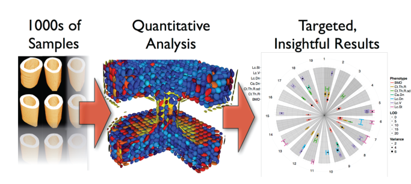

What we do
We are involved in the entire cycle from experiment design to measurement to analysis and interpretation. Pick and choose which components make the most sense for your needs.
We provide expertise in both static and dynamic X-ray imaging experiments on a wide variety of samples ranging from mouse bones to brain vasculature. We can help you design experiments, choose imaging modalities, scale up to large number of samples, and interpret the results in order to gain high quality, actionable information from imaging studies.
For existing studies, we provide the sample measurement as a service. We have years of experience working with X-ray tomography and can get the best performance from the instrumentation for 1 or 10,000 samples.
We have powerful, scalable in-house developed software for processing and extracting quantitative information in a streamlined fashion for even very large data sets. The software is automatically tested and verified to ensure the highest level of reliability for the results. We have the latest infrastructure available for storing and interactively analyzing thousands of samples with millions of microstructures. With our network analysis tools we can even investigate complicated networks of cells or pores with 10s of millions of connections.
We always deliver as a final product a detailed report distilling a series of complicated analyses into clear, legible figures and tables with thorough explanations of every step taken so the results can be reliably, automatically reproduced.